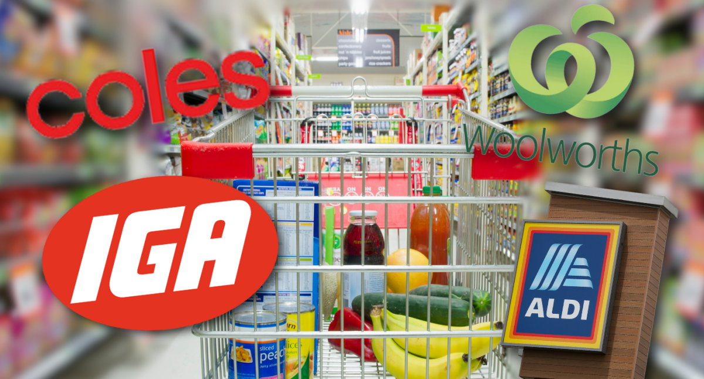

This analysis explores the estimated travel times (in minutes) from [Origin] to the closest supermarkets using different modes of transport (driving, walking, bicycling, and public transit) from Central Stations in major Australian Cities . Data is sourced from Google Maps APIs.